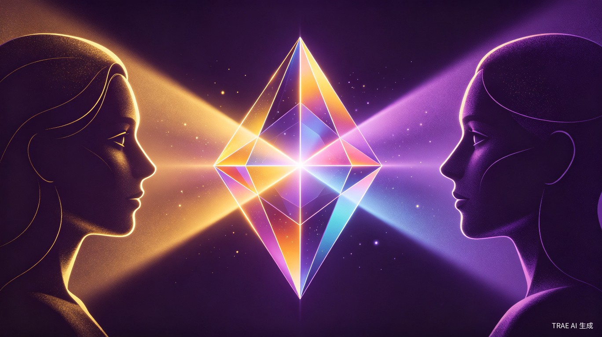
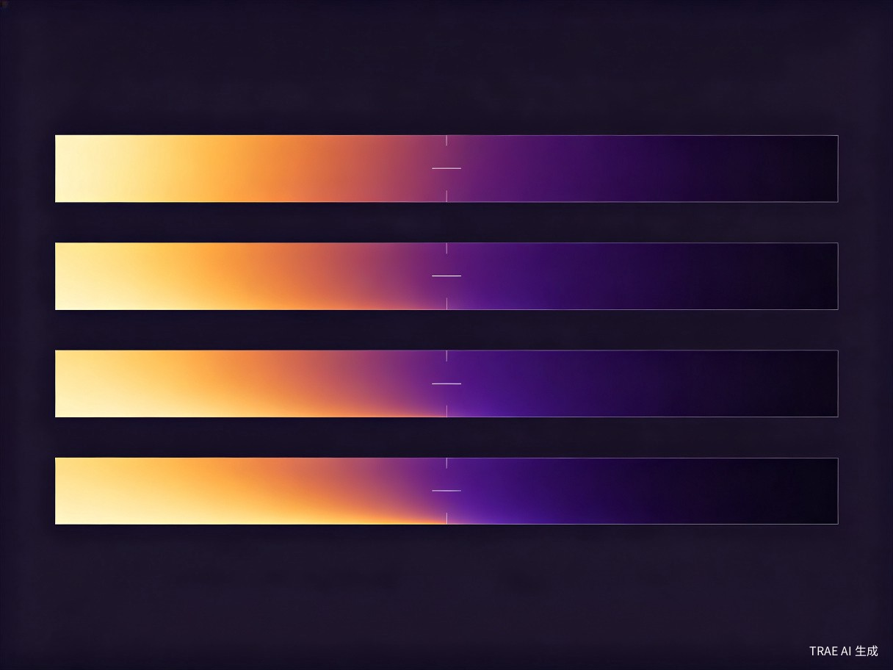
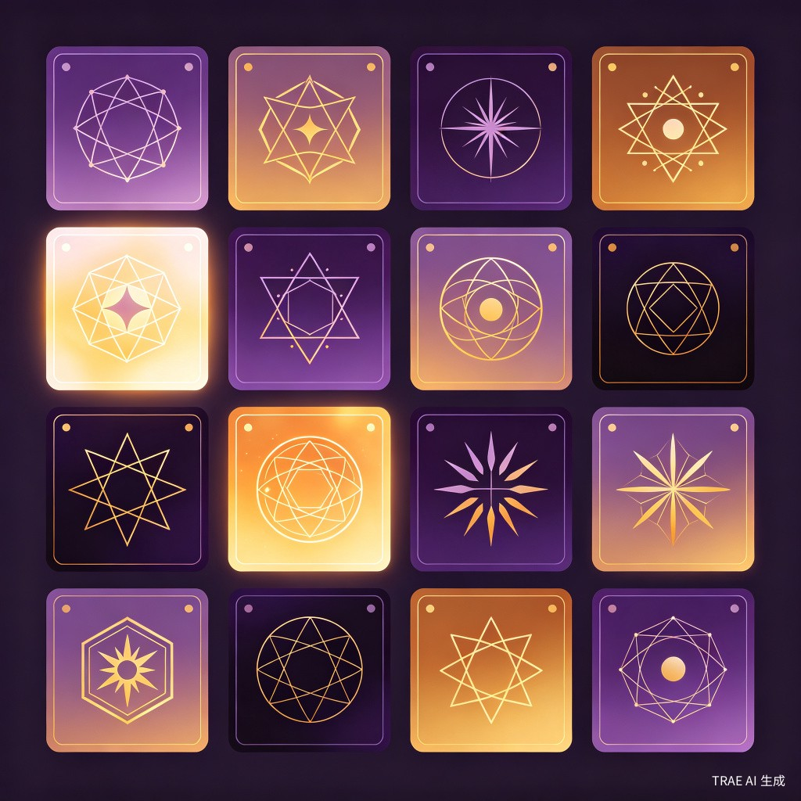
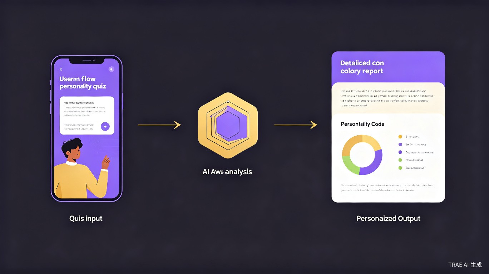

基于暗黑心理学与 LLM 的深度人格探索工具
看见你人格中的光与暗
现在年轻人对自我认知有强烈需求，但市面上的人格测试结果过于标签化——测完只得到一个四字母代码，既不能解释"为什么"，也不告诉你"然后呢"。比如一个总是讨好同事的人，一般只会说他可能是某某人格，但不会点出：你的友善背后可能有讨好倾向，而这恰恰是你可以成长的方向。很多人对自己的认知停留在表面，面对校园、职场、人际关系中的困惑时，缺少一个既诚实又体面的自我探索工具。
受暗黑心理学"阴影自我"理论的启发——每个人都有阳光面和阴暗面，真正的成长始于对两者的诚实接纳。LLM 的语义理解和生成能力，让深度人格分析不再受限于固定题库匹配，而是能基于用户的逐题回答进行个性化推理。我想做一个不说教、不审判，但比传统测试更诚恳的人格工具。
一个轻量级响应式网站（H5 移动优先 + 桌面自适应），包含人格测评、LLM 深度报告等主要功能，支持中英双语。
14–40 岁的中学生、大学生、职场新人、MBTI 话题活跃用户。他们习惯在社交媒体分享测试结果，对心理学有好奇心，同时正经历职场适应、人际关系、自我认同等现实困惑。
人格万花镜设计了四条"明↔暗"光谱轴，取代传统人格测试的二元分类。每轴采用 0–100 连续评分，50 分为平衡点，低于 45 偏明端、高于 55 偏暗端，中间地带标记为"摇摆"。

四轴组合生成四字母人格码（如 MHPA、FNES），对应 16 种镜像原型，每种都有专属图形和毒舌短评。

进入网站，选择语言，开始趣味人格测评题
完成情境化测评题，LLM 实时分析回答模式
获得四字母人格码 + 镜像原型 + 毒舌短评
LLM 生成个性化解读 + 光暗分析 + 成长建议

| 维度 | 传统 MBTI | 人格万花镜 |
|---|---|---|
| 分类方式 | 二元对立（E/I、N/S 等） | 0–100 连续光谱 + "摇摆"中间态 |
| 分析深度 | 固定题库匹配 | LLM 逐题推理，千人千面 |
| 阴暗面 | 不涉及 | 明↔暗双面呈现 |
| 结果呈现 | 四字母标签 | 人格码 + 16 镜像原型 + 毒舌短评 |
| 成长建议 | 无或笼统 | LLM 生成个性化成长路径 |
| 社交传播 | 标签归属感 | 人格卡 + 专属图形，传播性更强 |
四条"明↔暗"光谱轴的设计取代了传统测试的二元分类——每轴 0-100 连续评分，50 分为平衡点，低于 45 偏明端、高于 55 偏暗端，中间地带标记为"摇摆"。四轴组合生成四字母人格码，对应 16 种镜像原型，每种都有专属图形和毒舌短评。LLM 深度报告结合用户逐题作答生成个性化解读，确保每个用户都能拿到一份"说的就是我"的自我画像。
测评题采用情境化设计（非传统选择题），用户回答后由 LLM 进行语义分析，识别行为模式中的明面特质与暗面倾向。报告生成阶段，LLM 结合四轴评分与逐题作答内容，生成个性化的人格解读、光暗分析和成长建议。
轻量级响应式网站，H5 移动优先 + 桌面自适应。前端使用现代 Web 框架，后端对接 LLM API。支持中英双语，测评题库和报告模板均做本地化适配。